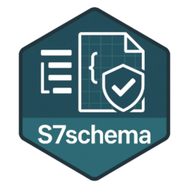

Convert an R object to YAML
to_yaml.RdThis function is used internally when validating list or S7schema objects, and
when using write_config() to save a configuration.
Underneath it is calling yaml::as.yaml() to do the conversion, but all logical values
are converted to true/false instead of yes/no respectively for a more robust integration
with other YAML parsers.
It is rarely relevant to call this function directly except for debugging purposes, or when implementing a new method for your own object class.
Details
to_yaml() dispatches based on the class of x. Register a new S7 method if you want to overwrite
how your own class is converted to YAML. See S7::method() for more information.
The default method just uses yaml::verbatim_logical() to overwrite the default behavior
of handling logical values:
function(x) {
yaml::as.yaml(
x = x,
handlers = list(
logical = yaml::verbatim_logical
)
)
}Copy this and add your own additional handlers when implementing a new method.
Examples
# Convert simple list to YAML
to_yaml(list(hello = "world", is_today = TRUE)) |>
cat()
#> hello: world
#> is_today: true
# Convert S7schema object
x <- S7schema(
file = system.file("examples/config.yml", package = "S7schema"),
schema = system.file("examples/schema.json", package = "S7schema")
)
print(x)
#> <S7schema::S7schema> List of 1
#> $ my_config_var: int 1
#> @ schema : chr "/home/runner/work/_temp/Library/S7schema/examples/schema.json"
#> @ validator: <S7schema::validator>
#> .. @ context:Classes 'V8', 'environment' <environment: 0x55b780a61880>
to_yaml(x) |>
cat()
#> my_config_var: 1